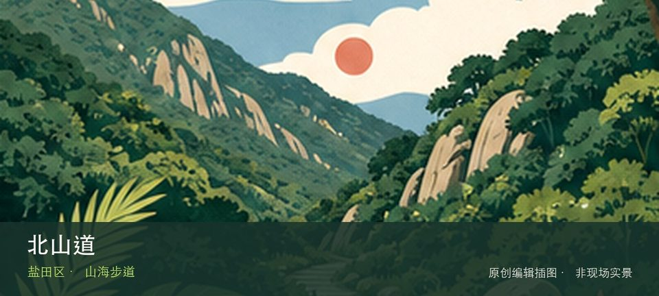

适合谁
适合有基础步行体力、愿意按天气调整路线的人；行动不便者应只选择平缓开放段。

SHENZHEN GUIDE · 114
盐田港北侧 · 山海步道
北山道位于盐田港北侧山坡，连续上坡把港区、社区和山体高差直接呈现，沿线日晒与车辆环境明显，适合清晨做短距离城市山海观察。若只匆匆经过容易错过重点，盐田港高位视角与北山社区坡道恰好构成最有辨识度的观察顺序。现场不必追求一次走完，先在盐田港高位视角与北山社区坡道之间确定主线，再按体力、日照和天气保留折返方案。山地、滨水或林下路面会随降雨改变，当天预警和开放边界始终比旧轨迹更优先。
WHY GO
适合有基础步行体力、愿意按天气调整路线的人；行动不便者应只选择平缓开放段。
从公共交通可达的下端开始，只走到首个安全观景节点后原路返回；正午、高温和雷雨时不安排。
公共交通先到盐田港北侧山坡片区，再以北山道公开参观入口为终点；多入口地点须按计划游线选择入口，并预先锁定返程站点。
导航至北山道官方开放入口配套或邻近正规公共停车场；周末满位即改乘公共交通，不在绿道口、村道或消防通道临停。
10 月至次年 4 月较舒适；4—9 月湿热且雷雨集中，强降雨前后不进入山脊、溪谷、陡坡或低洼路段。
NEARBY IDEAS